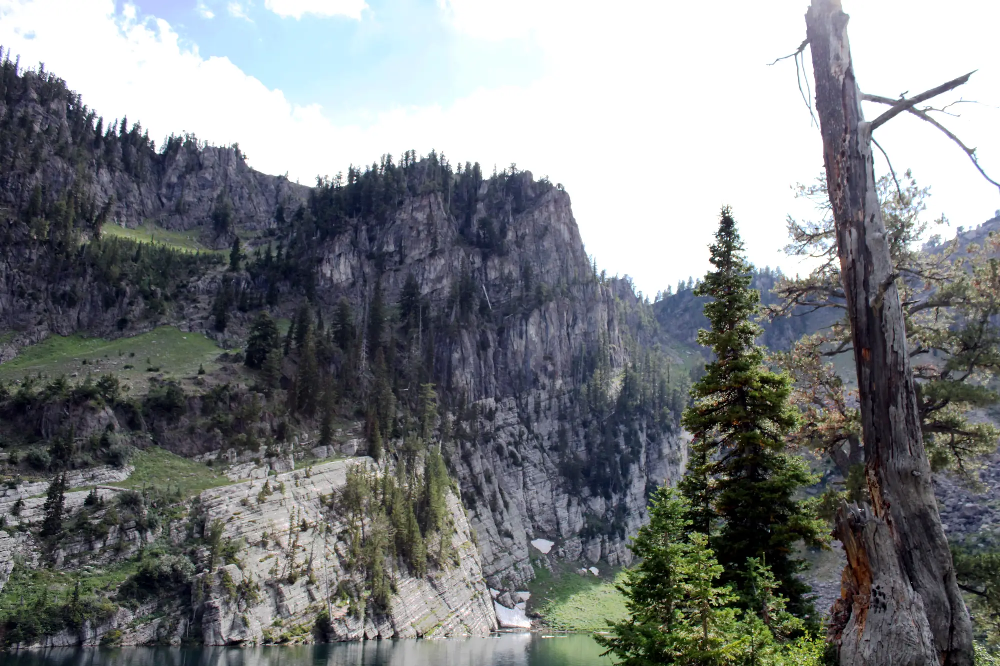
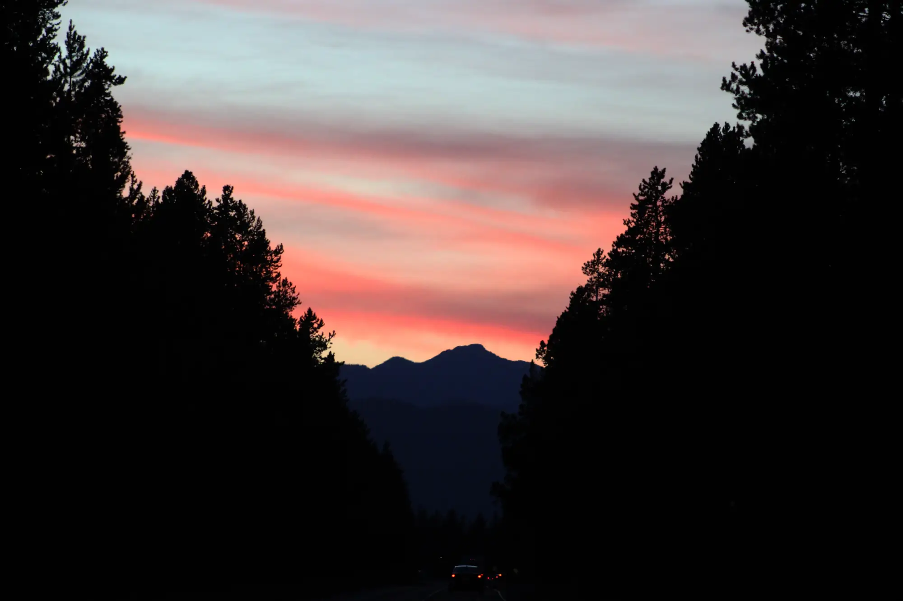

Hi, I'm Luke Wells
I am a student at Brigham Young University - Idaho, currently pursuing a Bachelor's degree in Software Engineering. I was born and raised in Southeast Idaho, an area rich with mountains and outdoor recreational opportunities, so its no surprise that in my free time, I enjoy stepping away from technology to explore the great outdoors. I've recently discovered an interest in photography, which aligns wonderfully with my time spent in nature. All the pictures on this website are my own work.

